地政学
高雄は台湾海峡の南口に近く、港、軍港、空港、鉄道、高速道路を束ねます。南シナ海と東南アジアへ開く位置が、貿易、海軍、エネルギー輸入、災害時の補給を左右する要の街です。海運と安全保障が重なる要港です。
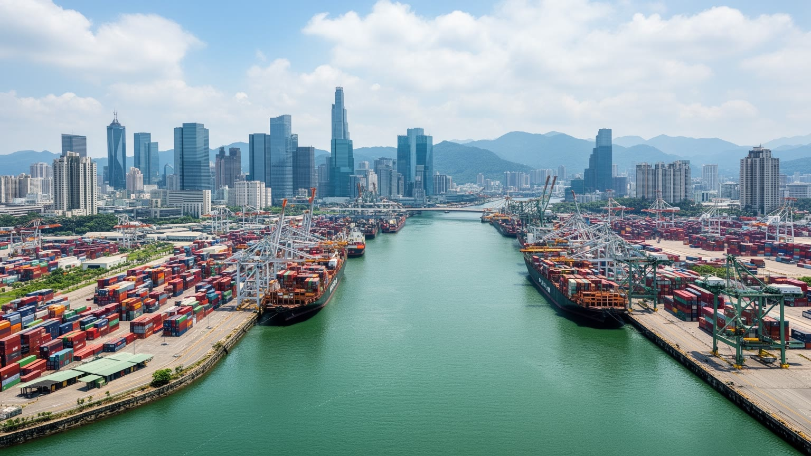
🇹🇼 台湾 / 高雄市 / World City Atlas
台湾南部の港湾、重工業、石化、鉄鋼、軍港、民主化の記憶、夜市、寺廟、海風、半導体投資が重なる都市です。台北とは違う暑さと労働の手触りを持ち、海峡と南シナ海へ開く台湾の南の玄関です。
都市の骨格
高雄は、コンテナ港、造船、製油、鉄鋼、加工輸出区、左営の軍事拠点、愛河沿いの生活空間を一つの湾岸都市に束ねます。近年は半導体と再開発が加わり、重工業都市の記憶を保ちながら新しい雇用と文化を探しています。
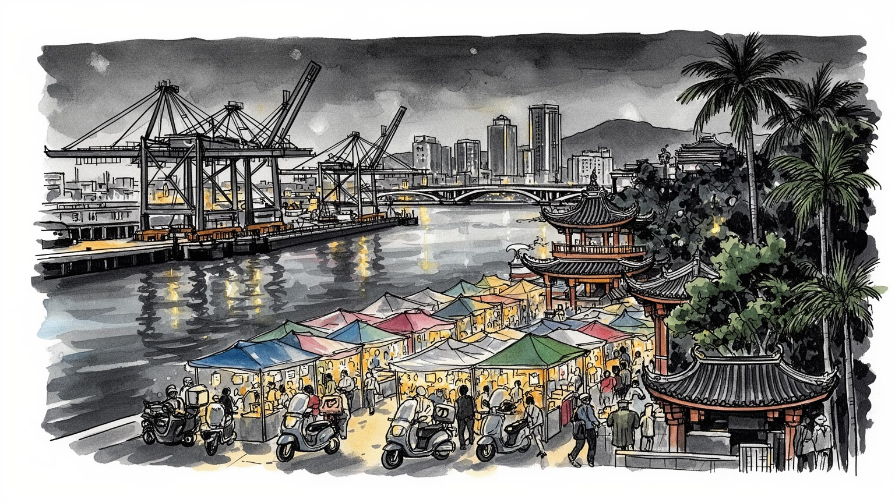
高雄は台湾海峡の南口に近く、港、軍港、空港、鉄道、高速道路を束ねます。南シナ海と東南アジアへ開く位置が、貿易、海軍、エネルギー輸入、災害時の補給を左右する要の街です。海運と安全保障が重なる要港です。
港湾、造船、鉄鋼、石化、金属加工、物流に半導体投資が加わります。交代勤務、港湾作業、工場保全、通関、トラック輸送、研究職が並び、重工業と新しい技術産業の転換を迫られる労働都市です。賃金と再訓練も焦点です。
蓮池潭の龍虎塔、左営の旧集落、旗津の海辺、媽祖や王爺信仰、廟会、夜市、台湾語の響きが都市を形づくります。港町の開放性と南部の政治文化が、台北とは違う濃い公共空間を生みます。祈りと食が近い南部の港町です。
旅行者は愛河、駁二、旗津、六合夜市、蓮池潭を巡りますが、住民は暑熱、通勤、工場排気、住宅費、老街区の更新と向き合います。観光の水辺の背後に、働く港湾都市の日常があります。夜風とバイクが響く南の街です。
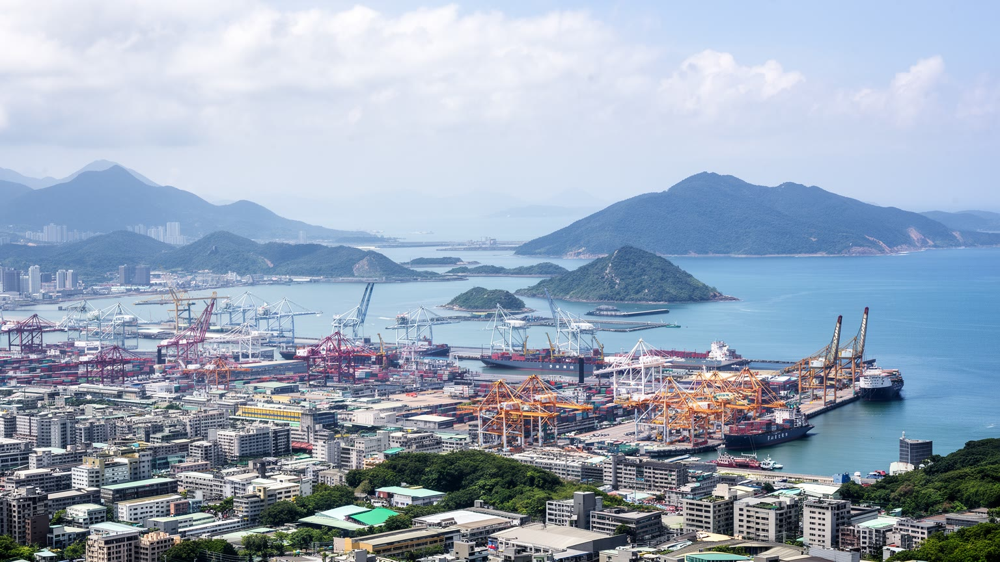
高雄を理解する入口は、市街地の背後に広がる港の地形です。寿山と旗津半島に守られた水域は、漁港から近代港湾へ拡張され、コンテナ、石油、鉄鋼、造船、倉庫、フェリー、軍事施設を抱える台湾南部の海の玄関になりました。港は都心から遠い産業地帯ではなく、愛河、鼓山、前鎮、小港、旗津の生活圏と接しているため、都市の匂い、音、交通、雇用を直接変えます。台湾海峡を北へ進めば台中や基隆へ、南へ出ればバシー海峡、南シナ海、東南アジア航路へつながり、輸入燃料と輸出品の流れが街の基礎になります。港湾の強さは経済だけでなく、地政学上の緊張や災害時の補給にも関わります。大型船が入る岸壁、臨海工業地帯、空港、高速道路、鉄道貨物が近接することは便利ですが、騒音、大気汚染、トラック交通、海面上昇への脆さも同時に抱えます。高雄の湾岸を歩くと、観光地として整えられた水辺の外側に、台湾が世界とつながる重い物流の現場が見えます。港は背景ではなく、市民の生活時間と国際政治を結びつける都市の骨格です。内陸の山地から平野へ流れる道路、左営の鉄道結節、空港の近さも、港を単独の施設ではなく都市圏全体の回路にしています。海と山の距離が短い高雄では、貨物、通勤、避難が同じ狭い回廊を使うため、交通計画と防災はいつも重なっています。地図上の湾曲した岸線そのものが、都市の産業配置と生活の距離感を決めています。
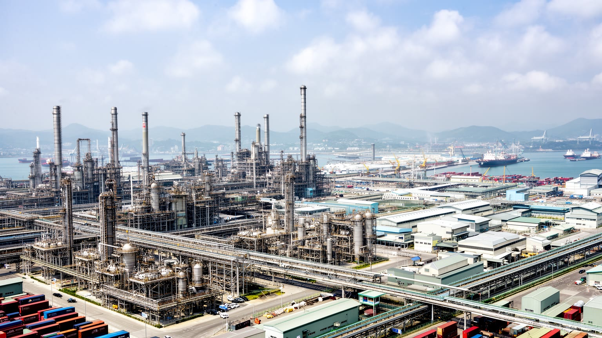
高雄の近代的な力は、石油精製、石化、鉄鋼、造船、金属加工、輸出加工区の労働から生まれました。小港や前鎮、楠梓周辺には、巨大な工場、パイプライン、倉庫、トラック、港湾設備が集まり、台湾の高度成長を支えました。ですが、重工業は雇用と税収を生む一方で、大気汚染、事故リスク、土壌汚染、景観の分断を残し、市民の健康と環境運動を刺激してきました。近年は半導体、先端材料、電動車関連、再生可能エネルギー、デジタルサービスへの投資が重なり、都市は古い産業基盤を更新しながら次の仕事を作ろうとしています。これは単純な成功物語ではありません。新しい工場は高賃金の技術職を生みますが、土地、水、電力、住宅価格、既存労働者の再訓練、下請け企業の転換も同時に問います。高雄科技大学や中山大学、職業高校、工業系の訓練機関は、港湾技能と電子産業をつなぐ教育の基盤です。放課後の塾、実習室、企業研修が若い世代の進路を支えます。鉄鋼や石化で働いてきた世代にとって、都市の誇りは煙突や岸壁にも残っています。環境負荷を減らしながら雇用を守り、若い技術者が南部に残れる条件を作れるかが、高雄の産業政策の核心です。反対に、土地だけを売る開発になれば、旧来の労働者は変化の外に置かれます。都市の転換は、煙突を隠すことではなく、働く人の次の居場所を作ることで測られます。
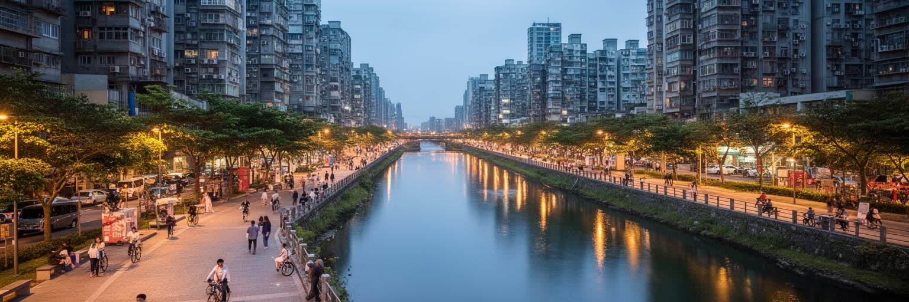
愛河は高雄の中心を流れる短い川ですが、都市の印象を大きく変えてきました。かつては工場排水と生活排水で汚れた水路として知られ、港湾と工業の陰に隠れていました。水質改善、下水整備、遊歩道、橋、照明、カフェ、イベント空間が整うにつれ、川は市民が散歩し、夜風を浴び、観光客が船から街を眺める公共空間へ変わりました。夕方にはジョギング、サイクリング、太極拳、犬の散歩、子どもの自転車練習、高齢者の休憩が重なり、週末には路上音楽や小さな市集が夜の時間を明るくします。バスケットコートや河岸の広場は、暑い昼を避けた運動の場所にもなります。愛河の再生は、重工業都市が水辺を消費空間に変えた例であり、同時に都市環境の回復がどれほど長い行政と市民の努力を必要とするかを示します。川沿いの風景には、古い住宅、ホテル、学校、官庁、路面電車、商業施設が重なり、再開発による地価上昇や住民の入れ替わりも起こります。きれいな水辺は都市の誇りになりますが、清掃、治水、夜間の安全、ホームレス支援、周辺の小さな店の継続がなければ、生活の場所としては弱くなります。水面に映る照明、湿った風、屋台の油の匂い、橋を渡るバイクの音は、港と工場だけでは語れない高雄の日常です。水辺は観光装置になる前に、世代の違う住民が同じ速度で街を使う余白です。
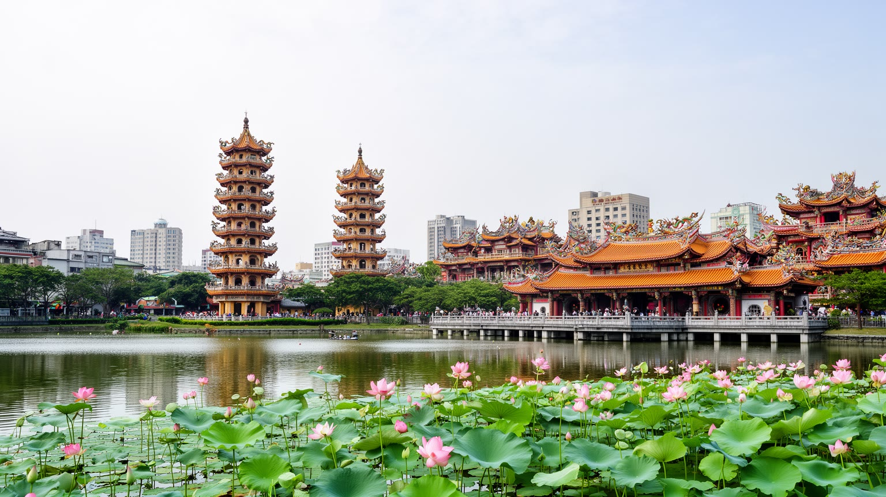
左営は高雄の古い記憶を濃く残す地区です。蓮池潭のほとりには龍虎塔、春秋閣、孔子廟、城隍廟、慈済宮などが並び、観光写真に収まる色彩の奥に、移民、漁業、軍事、郷土信仰の時間が重なります。清代の鳳山県旧城の痕跡、眷村文化、海軍基地、高鉄左営駅、住宅開発が近接し、古い集落と現代の交通拠点が一つの地区に詰め込まれています。寺廟は単なる装飾的な名所ではありません。媽祖、王爺、城隍、関帝をめぐる祈り、廟会、供物、爆竹、太鼓、巡行、地域団体の活動は、住民が家族の健康、商売、受験、安全を託す日常の制度です。祭りの日には子どもが山車を追い、高齢者が廟前の椅子で知人を待ち、屋台や小さな露店が信仰の周りに経済を作ります。線香の煙、紙銭の匂い、鉦の音、湖面の湿った風が、信仰を身体で覚えさせます。近くの学校帰りの子どもや参拝後に買い物をする家族も、廟前の流れを作ります。観光客は龍の口から入り虎の口から出る象徴性を楽しみますが、地元の人にとって湖畔は散歩、朝の運動、祖先や神明へのあいさつ、近所づきあいの場所でもあります。高雄は近代港湾都市として語られがちですが、左営を歩くと、都市の根は海運と工業だけでなく、古い城壁、寺廟、軍人家族、台湾南部の民間信仰にも深く伸びていることが見えます。保存と生活更新の折り合いをどうつけるかが、左営の魅力を観光資源で終わらせない条件です。
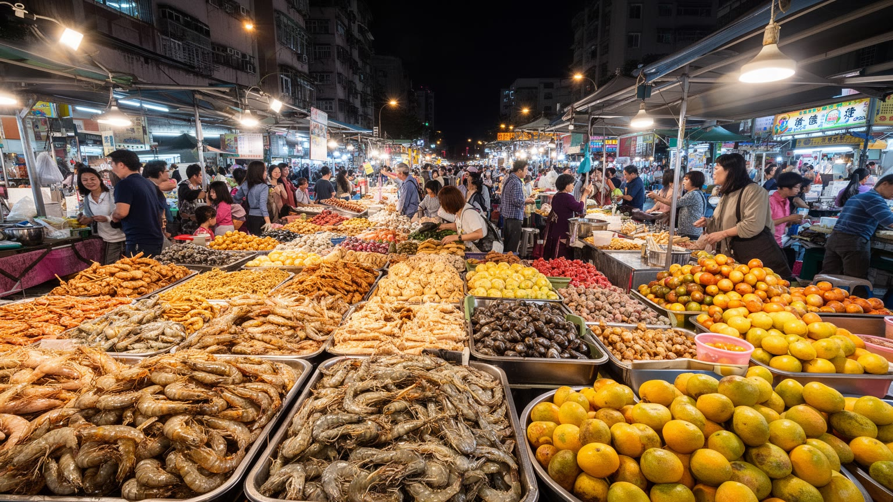
高雄の食文化は、暑さ、港、移民、工場勤務、学生、家族外食が作る夜の文化です。六合夜市や瑞豊夜市は観光客にも知られますが、都市の食はそこだけに閉じていません。三鳳中街の乾物、前鎮や苓雅の朝市、百貨店のフードコート、駅前の弁当店、路地の早餐店まで、買い物と食事は一日の時間を細かく支えます。商店街や夢時代のような大型店は週末の家族の行き先になり、露店とショッピングモールが同じ都市で競い合います。市場では店主の声、値段交渉、氷の上の魚、青果の色が朝の活気を作ります。港町という性格は魚介の豊かさだけでなく、船員や運転手、工場労働者の胃袋を満たす店の多さにも表れます。夜市は安く楽しい観光空間ですが、家賃、衛生、交通、ゴミ、騒音、観光化による価格上昇という課題を抱えます。子どもには甘い飲み物やゲーム屋台があり、高齢者には夕涼みの腰掛けと近所話の場所にもなります。台湾南部らしい人懐こい接客や屋台の密度は魅力ですが、それは長時間働く店主、家族経営、若いアルバイト、仕入れ市場の早朝作業に支えられます。鉄板の音、揚げ油の匂い、果物の甘さ、冷たい飲み物の氷、バイクの排気が混じる夜の通りでは、食と買い物と小商いが一体になります。屋台の椅子に座る時間は、階層や職場の違いを一時的に近づける街の小さな公共圏でもあります。
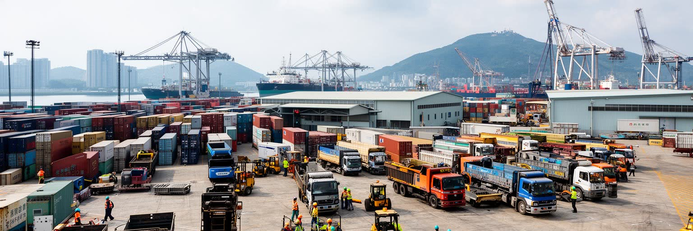
高雄港の重要性は、船の数やコンテナ量だけでは測れません。岸壁ではクレーン運転、荷役、倉庫管理、通関、保税区の事務、検査、整備、警備、清掃、トラック輸送、情報システムの仕事が連動し、世界貿易を毎日の勤務表へ変えています。貨物は半導体装置、石化原料、鉄鋼製品、農産物、日用品、エネルギー資源まで幅広く、港が止まれば台湾南部の工場も消費もすぐに影響を受けます。港湾労働は高度に機械化されても、危険な作業、夜勤、天候、納期の圧力と向き合います。台風が近づけば船は待避し、岸壁は固定作業に追われ、トラックや倉庫の段取りも変わります。物流の効率化は都市の競争力を高めますが、労働者の安全、賃金、休息、技能継承、外国人労働者の扱いを軽視すれば、港の強さは脆くなります。観光客が旗津へ渡るフェリーや駁二の倉庫群を楽しむ時、その周囲では見えにくい実務が続いています。高雄を港町として読むには、海を眺めるだけでなく、早朝のトラック列、休憩所、作業服、通関書類、港湾食堂、市場へ向かう仕入れの車を見る必要があります。夜明けの塩気、ディーゼルの匂い、無線の声は、港が眠らない職場として動いていることを知らせます。港の自動化が進むほど、現場で必要な技能は力仕事だけでなく、機器の監視、安全判断、データ管理へ広がります。港の朝は都市の鼓動です。
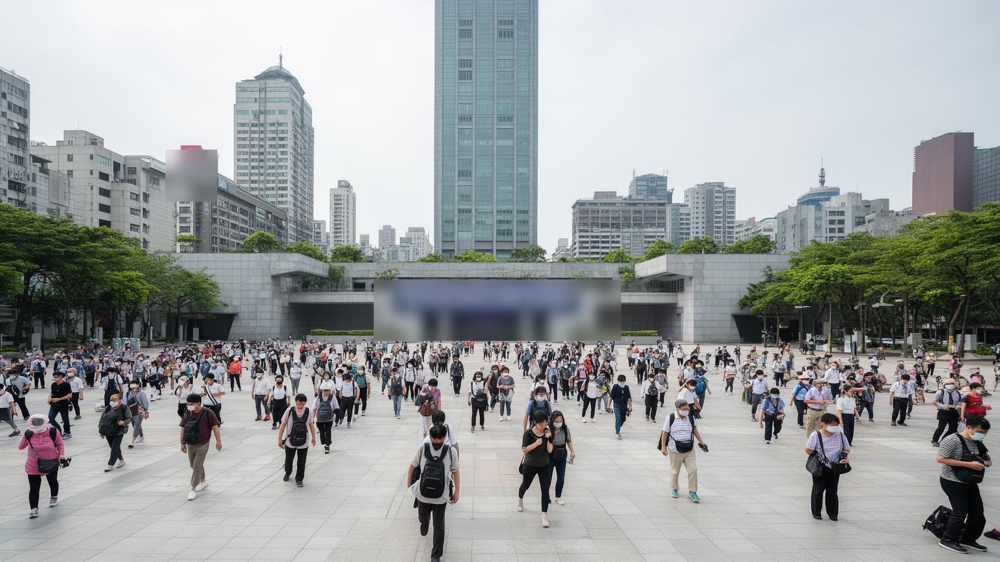
高雄は台湾の民主化を語る時に欠かせない都市です。1979年の美麗島事件は、戒厳令下での人権、言論、集会、地方政治のあり方を大きく揺さぶり、後の民主化運動へつながる象徴になりました。現在の美麗島駅はステンドグラスのような光の空間として知られますが、その地名には政治的な記憶が残ります。高雄の公共文化は、港湾労働者、地方派閥、環境運動、労働運動、民進党の支持基盤、中央政府との距離感を通じて、台北とは異なる政治の温度を持ってきました。民主化の記憶は記念碑に固定された過去ではありません。工場汚染への抗議、都市再開発への意見、交通政策、住宅、労働条件、エネルギー施設への不安など、市民が声を上げる場面に受け継がれます。地元新聞、ラジオ、テレビ、オンライン番組、大学の討論会は、南部の争点を全国へ押し出す媒体にもなります。南部の政治は熱気や対立として外から語られがちですが、その背後には長く中央から見えにくかった地域の不満と、自分たちの生活環境を自分たちで決めたいという感覚があります。高雄を歩くと、港の実務都市という面だけでなく、公共空間で意見を表す都市でもあることが分かります。民主主義は制度だけでなく、広場、駅、新聞、集会、家族の会話に宿る都市の習慣です。若い世代にとって事件は歴史資料であっても、駅名、記念行事、学校教育、選挙の言葉を通じて日常に戻ってきます。
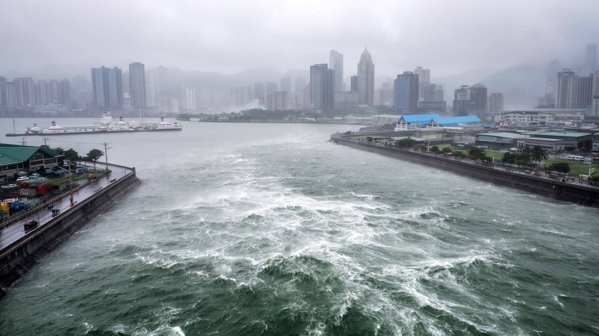
高雄の暮らしは、熱帯モンスーン気候の明るさと厳しさの両方を受けます。長い夏、強い日差し、高湿度、豪雨、台風、南西気流による雨は、屋外労働者、高齢者、子ども、バイク通勤者に直接の負担を与えます。港湾、臨海工業地帯、地下空間、低地住宅、河川沿いの市街地は、高潮、内水氾濫、排水能力、停電、物流停止のリスクを抱えます。気候リスクは自然災害の話にとどまりません。石化や鉄鋼の脱炭素、港湾設備の強靱化、工場の節水と電力需要、緑陰の少ない道路、貧困世帯の冷房費、外国人労働者への避難情報まで、都市政策の広い範囲に関わります。高雄は太陽光や水素、循環経済の実験を掲げる一方、既存産業の排出削減と雇用維持を同時に進めなければなりません。暑い街で涼しく歩ける道、豪雨の時に安全に帰れる交通、港が浸水しても復旧できる計画は、観光以上に生活の質を左右します。海に開かれた都市の魅力は、海から来る危険と切り離せません。高雄の未来は、湾岸の美しさを保ちながら、暑さと水の暴力をどれだけ日常の設計に織り込めるかにかかっています。日陰、街路樹、雨水貯留、避難所、冷房のある公共施設は、弱い立場の人ほど必要とする都市インフラです。気候への適応は大きな堤防だけでなく、毎日の通学路や工場の休憩時間にも現れます。暑さを前提にした都市設計こそ、南部らしい住みやすさの条件になります。
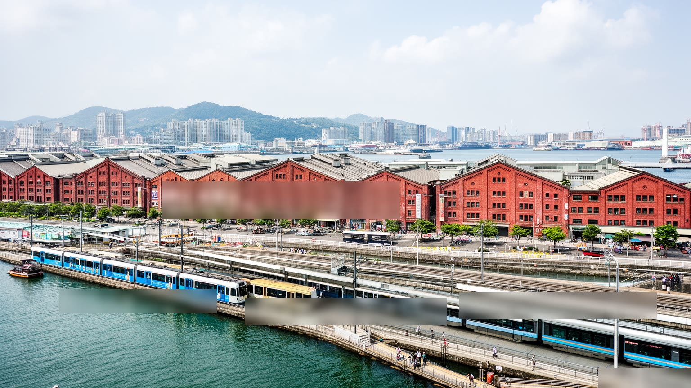
駁二芸術特区と周辺の湾岸再開発は、高雄が自分の産業遺産をどのように読み替えているかを示します。かつて港湾物流を支えた倉庫、線路、岸壁は、展示、ライブ、映画、デザイン、書店、カフェ、ライトレール、週末散歩の空間へ変わりました。夜には音楽イベント、屋外上映、若いバンドの演奏、雑貨市、独立系メディアの企画が集まり、港の倉庫は買い物と表現の場にもなります。高校生や大学生が写真を撮り、親子が芝生で休み、観光客が土産を選ぶ光景は、教育、余暇、消費を一つの岸壁に重ねます。これは重工業都市が文化都市へ脱皮する明るい物語に見えますが、同時に観光化、家賃上昇、周辺住民の生活、若いクリエイターの収入、公共空間の商業化という緊張も生みます。倉庫を残すことは、港湾労働の記憶を保存する行為ですが、きれいな展示空間だけでは汗や騒音や危険を伴った労働の歴史が薄まります。ライトレールは水辺を歩きやすくし、市街地と港を近づけましたが、都市交通全体の利便性、バスとの接続、郊外から来る人の使いやすさも問われます。芸術、観光、散歩、子どもの遊び、港の記憶が同じ岸壁に並ぶ時、都市は過去を消すのではなく、別の用途で開き直すことができます。週末のにぎわいが平日の仕事と切り離されすぎると、場所は舞台装置になってしまいます。倉庫の歴史を読み、市民が無料で過ごせる余白を保つことが、再開発の質を決めます。
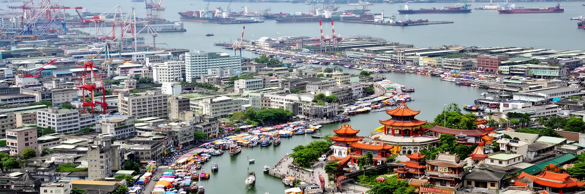
高雄を一つの都市像に閉じ込めることは難しいです。港湾都市、重工業都市、民主化の記憶を持つ南部政治の拠点、夜市と寺廟の街、暑い水辺の観光地、半導体投資を受け入れる技術産業都市が同時に存在します。台北の行政と金融の中心性に比べると、高雄の力はより身体的で、岸壁、工場、トラック、廟前、川沿い、バイクの流れとして現れます。都市の魅力は、愛河や駁二の整った風景だけでなく、小港の工場地帯、左営の古い信仰、旗津の海風、港湾労働者の朝、夜市の油の匂い、美麗島の政治的な記憶、球場や公園で体を動かす夕方をつないで初めて見えます。課題も多いです。人口減少、若者の北部流出、産業転換、環境負荷、暑熱、住宅価格、交通の分散は、南部の暮らしを左右します。子どもが安全に通学し、高齢者が涼しい場所で休み、屋台や市場の店主が商いを続け、大学やメディアが地域の声を外へ伝えられるかも、都市の強さを測る基準です。高雄には海へ開く地理、土地の広さ、産業の蓄積、公共空間を作り直す経験があります。観光客が短い滞在で感じる明るさの奥には、台湾が世界市場と向き合う重い現場があります。高雄を読むことは、台湾の豊かさが半導体の数字だけでなく、港、工場、信仰、政治、食、気候への備えに支えられていると知ることです。南の暑さ、海風、線香、油、音楽、工場の金属音が重なる都市として見る時、高雄の輪郭ははっきりします。